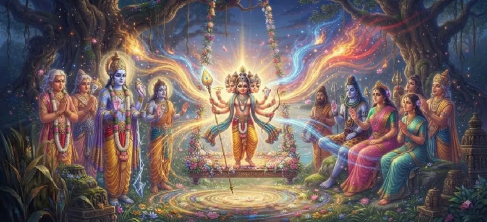

Kumāra’s Powers Revealed
Chapter 18 of the Kumara Khanda delivers the thrilling and awe-inspiring account of young Kumara demonstrating his extraordinary martial strength and supreme spiritual prowess before the assembled deities.
As the divine child showcases his peerless might, all doubts vanish from the minds of the devas, cementing their absolute faith in his destiny as the supreme commander.
Chapter 18 Highlights & Full Overview
Supreme Prowess
Unleashing boundless cosmic energy in the presence of devas.
Invincible Might
Demonstrating total mastery over all elemental forces.
Devas' Reassurance
Transforming fear into absolute confidence and joy.
Radiant Glory
Illuminating the entire cosmos with his divine brilliance.
Battle Readiness
Proving his absolute readiness for the ultimate conflict.
Path to Armaments
Setting the stage for receiving divine celestial weapons.
Core Topics Detailed in This Chapter
- 01The Request of the Devas for a Display of Power→
- 02Kumara’s Gracious Consent and Manifestation→
- 03Demonstration of Extraordinary Physical and Spiritual Might→
- 04Control Over Elements and Cosmic Forces
- 05The Astonishment and Jubilation of the Assembled Gods→
- 06Confirmation of His Role as Supreme Commander→
- 07Transition to Chapter 19 (Kumāra Receives Divine Weapons)→
1. The Request of the Devas for a Display of Power
Following their arrival in Saravana and after offering their reverent hymns of praise, the deities humbly approach young Kumara. Driven by the urgent need to defeat the seemingly invincible Tarakasura, they politely request the divine child to reveal a glimpse of the extraordinary power he possesses, so that their lingering anxieties may be fully put to rest.
2. Kumara’s Gracious Consent and Manifestation
Understanding the plight of the gods and smiling graciously at their earnest appeal, Kumara consents to reveal his might. With a subtle shift in his divine consciousness, the youthful lord allows his true cosmic stature to unfold, expanding his form and radiating an intensity of light that causes the surrounding reed forest and the heavens above to shimmer with brilliant splendor.
3. Demonstration of Extraordinary Physical and Spiritual Might
The text vividly describes the astonishing display of strength. With effortless ease, Kumara lifts massive boulders, splits towering mountains with a mere gesture, and demonstrates speed and agility that surpass the wind. This display is not merely physical muscle, but the total embodiment of supreme spiritual energy manifesting through a divine warrior form.
4. Control Over Elements and Cosmic Forces
During this revelation, Kumara commands the elemental forces of nature. Fire bows to his touch, winds quieten at his command, and the earth trembles lightly in absolute reverence. This absolute dominion over all cosmic principles proves beyond doubt that he is none other than the direct power of Lord Shiva manifest for the preservation of righteousness.
5. The Astonishment and Jubilation of the Assembled Gods
The assembled devas, sages, and celestial beings watch in breathless amazement. All lingering doubts and fears regarding their ability to overcome Tarakasura instantly evaporate. Filled with boundless joy, they shout cries of victory, shower celestial flowers upon the divine child, and praise him with renewed devotion and profound relief.
6. Confirmation of His Role as Supreme Commander
Witnessing this peerless exhibition of power, Lord Brahma and Indra formally declare that Kumara is fully prepared in every dimension to lead the divine armies into battle. The psychological and spiritual transformation of the heavenly host is complete; they now look upon young Kumara not just as a child prodigy, but as their undisputed and invincible commander-in-chief.
7. Transition to Chapter 19 (Kumāra Receives Divine Weapons)
With his extraordinary powers fully revealed and acknowledged by the entire cosmos, the narrative seamlessly transitions to the next crucial stage of his preparation. This sets the direct stage for Chapter 19: **Kumāra Receives Divine Weapons**, where the divine armaments and celestial weapons required for the great war are ceremoniously bestowed upon him.
Key Teachings and Spiritual Takeaways of Chapter 18
Manifest Power
Divine potential translates into undeniable reality when called upon.
Absolute Control
True mastery rules over nature and cosmos effortlessly.
Dissolution of Fear
Witnessing supreme power dispels all existential dread.
Rightful Leadership
True authority is backed by unmatched capability and grace.
Transcendent Brilliance
The divine form outshines all darkness in the universe.
Readiness for War
Demonstrating strength precedes the bestowal of divine weapons.
Spiritual Reflection
Chapter 18 teaches us that when righteousness is challenged, the divine does not merely remain hidden in subtle grace but manifests tangible, invincible power to restore order. Within our inner spiritual life, realizing our true inner strength dispels the darkness of ignorance and prepares us to conquer inner obstacles.
Living the Message of Chapter 18
Trust in the supreme inner power granted to you by divine grace to overcome life's obstacles.
Replace anxiety and fear with confident faith in higher spiritual order.
Prepare yourself diligently through discipline and devotion for your spiritual duties.
Key Spiritual Concepts
Shakti-Prakatya
The grand revelation and manifestation of supreme martial power.
Deva-Vismaya-Prabodha
The awakening of absolute confidence and awe among the gods.
Bhumi-Giri-Nirmana
Demonstrating control over mountains, earth, and elemental forces.
Senapati-Yogyata
Proving absolute qualification for supreme military leadership.
Tejas-Vistara
The expansion of divine radiance across the cosmos.
Vijaya-Sankalpa
The unshakable resolve and certainty of ultimate triumph.
The grand revelation and manifestation of supreme martial power.
The awakening of absolute confidence and awe among the gods.
Demonstrating control over mountains, earth, and elemental forces.
Proving absolute qualification for supreme military leadership.
The expansion of divine radiance across the cosmos.
The unshakable resolve and certainty of ultimate triumph.
Chapter Summary
Kumara Khanda Chapter 18 narrates the breathtaking revelation of young Skanda's extraordinary martial and spiritual prowess before the assembled devas, confirming his absolute readiness and undisputed status as the supreme commander for the coming war against Tarakasura.
Frequently Asked Questions
1. What is the detailed focus of Kumara Khanda Chapter 18?
Chapter 18 focuses on the breathtaking demonstration of young Kumara's invincible martial strength, cosmic energy, and supreme spiritual prowess before the assembly of devas.
2. How do the devas react when Kumara reveals his powers?
The devas are filled with awe, experiencing supreme joy and confidence that their ultimate victory over Tarakasura is guaranteed.
3. What aspect of Kumara's nature is highlighted in this chapter?
The chapter highlights his absolute invincibility, mastery over all elemental forces, and his readiness to assume supreme command.
4. What chapter follows Chapter 18?
The next chapter is Chapter 19, titled 'Kumāra Receives Divine Weapons'.
“Unleashing his boundless martial might before the gods, young Kumara proved that absolute light is the ultimate conqueror of darkness.”
Continue Through Kumara Khanda
Chapter 18 details the revelation of Kumara's powers. Continue to the next chapter, Kumāra Receives Divine Weapons.